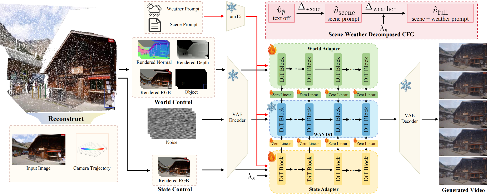
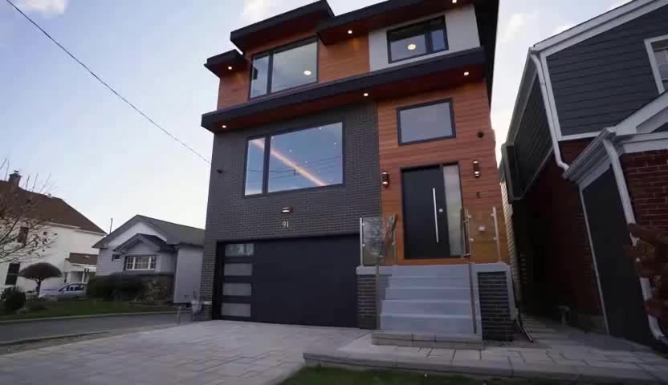
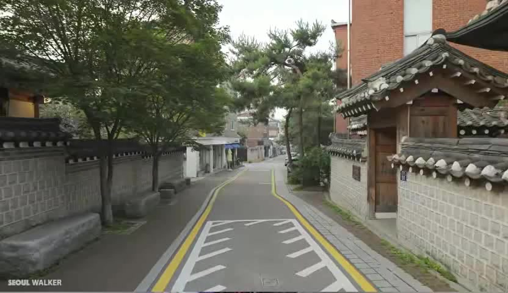
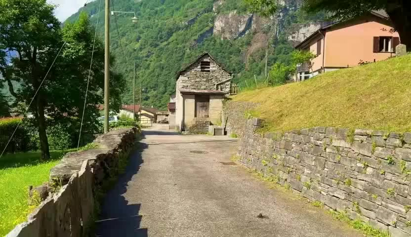
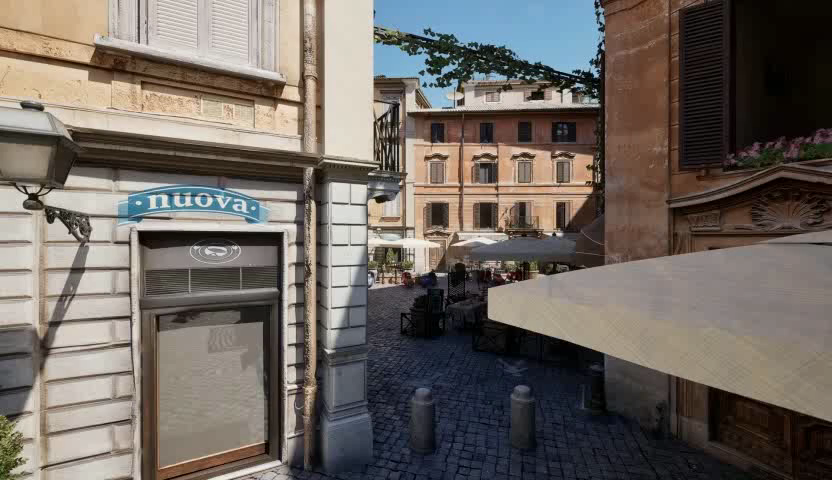
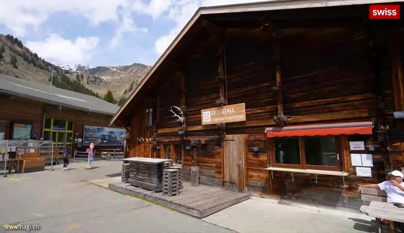

Holo-World
📋 ABSTRACT
-
Video world models are moving toward preserving an observed world under controllable camera and object motion while allowing its environmental state to change. Yet these controls remain isolated, and weather generation typically relies on a source video or reconstructed scene that already specifies future structure. We study a first-frame-anchored source-to-state setting, where the model starts from a single image and follows explicit camera and object controls and an optional weather instruction, then generates a video that either preserves the source world or transfers it to a target weather state. To address these challenges, we first build HoloStateData, a state video dataset that turns diverse videos into unified control samples for camera, object, and weather supervision. Second, we introduce Holo-World, a unified controllable video world model that jointly controls the scene from a single image. Its Unified Scene Adapter factorizes world preservation and weather transfer into distinct parameter subspaces, using rendered background, geometry buffers, and object controls to maintain controlled scene structure while modeling weather-dependent appearance and particle effects. Additionally, Scene-Weather Decomposed CFG guides scene and weather residuals separately, strengthening target weather effects without over-amplifying the full condition. Quantitative and qualitative experiments demonstrate that Holo-World maintains precise camera and object controls with consistent scene structure while transferring scenes into diverse target weather states, outperforming video-to-video weather editing baselines on weather-state generation.
Unified World Control
A unified video world model interface
Holo-World jointly controls camera motion, object dynamics, and weather state from a single image.
World Preservation
Source-side controls define the scene scaffold to preserve
Camera trajectory, rendered geometry buffers, and object controls anchor the background structure and dynamic entities, keeping the generated world consistent with the observed source.
Weather-State Transfer
Target weather specifies the state to render
The target-weather prompt guides the preserved scene scaffold into a new weather state, allowing weather-dependent appearance and particle effects to emerge within the same controlled world.
🔬 Method

Holo-World jointly controls camera motion, object dynamics, and scene weather state within the same observed world. The model must change weather from a single image while still following explicit camera and object controls, rather than relying on a complete source video as in video-to-video weather editing.
HoloStateData
15000+ training samples across Real / Simulation / V2V subsets, carrying paired controls for camera, object, and weather supervision.
Benchmark
150 mutually exclusive evaluation samples for world preservation and weather transfer tracks.
🌦️ Weather-State Transfer
Given the same input: camera trajectory and rendered controls, Holo-World renders the controlled scene under different target weather states. Our learn weather-state transfer within the same scene scaffold, rather than regenerating a different world.

🧭 World Preservation
Source-side controls define the scene scaffold Holo-World should preserve. Camera trajectory, rendered world controls, and object controls anchor background structure and dynamic entities, enabling temporally consistent video synthesis.

🎯 Camera & Object Control Comparison
Controllable video generation under camera trajectory and object manipulation. We compare Holo-World with VerseCrafter, Gen3C, and Uni3C. The top rows show the camera trajectory, Ground Truth, each method's rendered RGB control, and the bottom row shows the corresponding generated results.
⛈️ Weather Transfer Comparison
Note: Our I2V Advantage over V2V Methods
Holo-World performs Image-to-Video (I2V) generation, synthesizing temporal dynamics and weather effects from only a single input frame plus camera trajectory. In contrast, other methods (Wan2.7-Edit, Cosmos-Transfer-2.5) are Video-to-Video (V2V) approaches that receive the full origin video as input and perform video editing or transfer, which is a less challenging task as they can leverage the temporal information from the origin video.



📚 Citation
If you find HoloWorld useful in your research, please cite us:
@article{yin2026holoworld,
title={Holo-World: Unified Camera, Object and Weather Control for Video World Model},
author={Xiangchen Yin and Wenzhang Sun and Jiahui Yuan and Zijie Liu and Yinda Chen and Wei Li and Dachun Kai and Chunfeng Wang and Xiaoyan Sun},
year={2026},
eprint={2606.20083},
archivePrefix={arXiv},
primaryClass={cs.CV},
url={https://arxiv.org/abs/2606.20083},
}